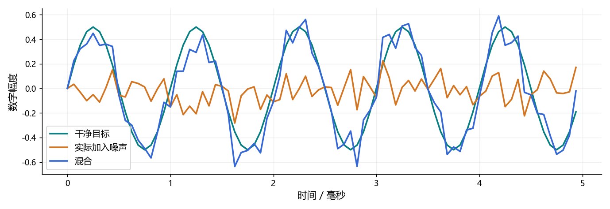

看图理解 · 跟着推演 · 对照真实结果
第03课 · 亲手配出10分贝信噪比
用一条纯音和一条噪声，分清峰值、RMS、数字电平和信噪比。
文字和视频配合学，内容没有删减
上方“读完整图文”是本课完整教程，包含详细解释、公式、代码和练习；这里的视频讲解核心算例，不代替全部正文。可以先读再看，也可以看不懂时回到文字逐步推导。跟着视频暂停预测，解释运行图的横轴、纵轴和曲线，再做下面的自测。
先修：第01—02课；知道数组表示一段音频。
- 能计算峰值与RMS并解释差别
- 知道10log和20log分别用于什么
- 能构造指定SNR且不把它误称为响度或声压级
跟着运行：注释代码、实际输出与结果图
下面代码在生成本站时实际执行。这里只是教学小实验，不是完整模型训练或业务设备测评。
import numpy as np
fs = 16000
t = np.arange(fs) / fs
s = 0.5 * np.sin(2 * np.pi * 1000 * t) # 干净目标
n = np.random.default_rng(7).normal(size=s.shape)
ps, pn = np.mean(s ** 2), np.mean(n ** 2) # 实际均方值
snr_db = 10.0
alpha = np.sqrt(ps / (pn * 10 ** (snr_db / 10)))
noise = alpha * n # 保留真正加入的噪声，便于核验
mixed = s + noise
rms = np.sqrt(ps)
t_ms = t * 1000
print('峰值/RMS:', np.max(np.abs(s)), rms)
print('RMS dBFS:', 20 * np.log10(rms))
print('实测SNR:', 10 * np.log10(ps / np.mean(noise ** 2)))
print('混合峰值:', np.max(np.abs(mixed)))
本次实际输出
峰值/RMS: 0.5 0.35355339059327384 RMS dBFS: -9.030899869919434 实测SNR: 9.999999999999998 混合峰值: 0.8922000243349858

闭卷自测：目标均方0.01、原噪声均方0.04，构造10 dB SNR时，噪声幅度应乘多少？
所需噪声均方0.001；α=√(0.001/0.04)=√0.025≈0.1581。
逐字讲稿 · 可定位回看
想象一盏一直亮的灯和一盏只闪一下的灯。最亮瞬间可以一样，但整段平均不同。音频的短爆音和持续纯音，也可能有相同峰值而不同均方根。
本例用峰值零点五的完整纯音，再加入随机噪声。我们要分别回答：目标电平多大，噪声电平多大，二者比值是多少，而不是只说声音很大或者很小。
这里的数值是数字幅度，不是经过校准的声压。先把数学量讲清楚，后面判断降噪、自动增益控制和削波时，才不会把不同问题混成一个分数。
正弦有正有负，直接平均可能接近零，但它显然不是静音。因此先平方，让正负都贡献非负量，再求平均，最后开根号回到原来幅度的量纲。
对于覆盖整数周期的理想正弦，均方根是幅度除以根号二。零点五除以根号二，约零点三五三六。这是我们对程序输出的第一条预测。
这个捷径只适用于满足条件的正弦。真实语音、脉冲和带长静音的录音，必须按数组实际计算。不要把任何音频峰值都除根号二当作均方根。
功率比为十，用十乘以十的对数，结果就是十分贝。分贝不是脱离参考量的绝对数，负分贝也不是负能量，只表示比参考值更小。
在功率与幅度平方成正比且比较条件一致时，幅度比要用二十乘对数。因为幅度先平方，会让对数前多出一个二，这才是十和二十的来源。
幅度翻倍大约增加六分贝，功率翻倍大约增加三分贝。两个六十分贝不能直接相加成一百二十；要先根据相干性和比较量回到线性域处理。
本课数字满刻度参考设为一，均方根约零点三五三六，对应约负九点零三分贝满刻度。峰值零点五则约负六点零二，两个数描述不同统计量。
声压级需要帕斯卡单位和明确参考声压，还需要麦克风与增益链路的校准。水下和空气常用参考量也不同，不能只拿一个分贝数字跨场景比较。
响度涉及听觉加权和测量规则，不等于均方根换个名字。静音取对数趋向负无穷，代码添加很小的数只是防数值问题，并没有测出设备的真实底噪。
峰值零点五的完整纯音，均方值是零点五平方再除二，也就是零点一二五。要十分贝信噪比，噪声均方值就应是零点零一二五。
注意不是噪声幅度简单除以十。均方值和幅度之间有平方关系，幅度缩放需要开根号。这也是混噪代码常见错误的来源。
我们手里有独立的干净目标和噪声，所以能精确控制合成信噪比。真实单通道录音只有混合结果时，通常没有这两个参考，不能直接宣称准确测出了真实信噪比。
我们生成一条随机噪声，但有限长度样本的均方值不一定恰好是一。因此先计算目标和这条噪声各自的均方值，再求缩放系数。
缩放后噪声的均方值是原均方乘系数的平方。让它等于目标均方除以十，就得到图中的开根号公式。这里没有神秘常数，都是从目标定义倒推。
这个式子要求目标和噪声都不是全零。全零噪声无论乘多大仍是零，不能用添加极小数掩盖无效输入，然后声称满足了一个有限信噪比。
前五行生成一秒目标和同样长度的噪声，形状都是一万六千。随机种子固定为七，方便在相同环境重现并检查结果，而不是让每次曲线都随机改变。
中间计算两个均方值和缩放系数。变量noise是实际加入的噪声，mixed才是混合。保留noise，后面才能用同一定义核验信噪比。
最后分别输出目标峰值、均方根、数字电平、信噪比和混合峰值。注意混合峰值需要另算，十分贝信噪比并不能自动保证峰值小于一或输出永不削波。
图只画前五毫秒，方便看清噪声怎样偏离纯音；计算均方值和信噪比使用的是完整一秒。只盯这小段的起伏，不能代替整段统计。
目标峰值应为零点五，均方根约零点三五三六。构造出的信噪比在浮点误差范围内是十分贝，显示成九点九九九九并不代表算法失败。
混合曲线有时高于目标，有时低于目标，因为噪声有正有负。这次图验证的是指定条件下的数据合成，不是某个增强模型的真实降噪表现。
如果把混合音频统一乘零点五，目标和噪声都减半，二者均方都乘零点二五，比例不变，所以信噪比不变。数字电平下降约六分贝，却不能叫改善了六分贝信噪比。
再想一段前九秒静音、最后一秒说话的录音。全段均方根与只统计说话区域的均方根会不同，比较前必须说清有效区间和是否做了归一化。
真正评估增强，要同时看语音有没有损失、残留噪声多少、是否引入失真，并结合试听和任务指标。把输出压到几乎听不见，当然很安静，却不是好算法。
目标均方零点零一，原噪声均方零点零四，要求十分贝信噪比，缩放系数是多少？请先求需要的噪声均方，再开根号。
需要噪声均方零点零零一。零点零零一除以零点零四等于零点零二五，开根号约零点一五八一。把这个系数平方乘回原均方，可以核验答案。
课后把代码目标改为零、五、十分贝，保存干净目标与实际噪声，并记录统计范围和峰值。不要只交三张波形图，要能解释为什么每个信噪比是对的。
适用边界与参考正文
合成数据拥有独立目标与噪声；这里的SNR不等于未知真实录音的可直接观测值，dBFS也不等于未校准的声压级或主观响度。
图、公式、代码结果均由本站制作；旁白是本地中文语音合成，不是教师真人录音，也不是 NotebookLM 生成。没有向 Google 上传项目材料。